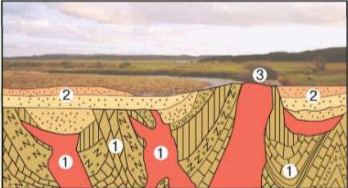
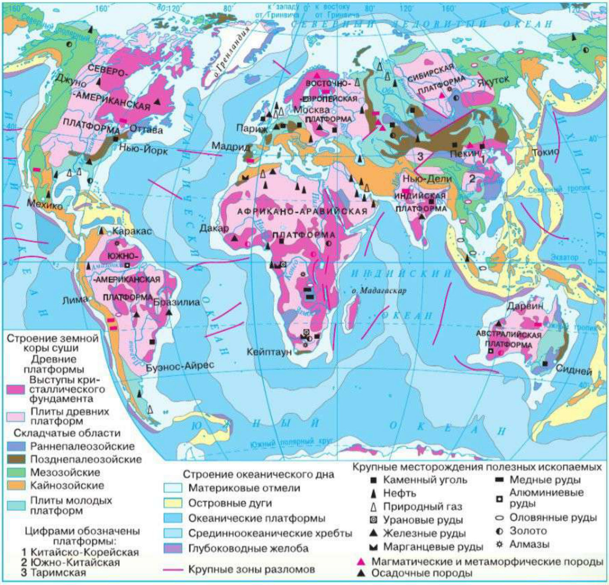
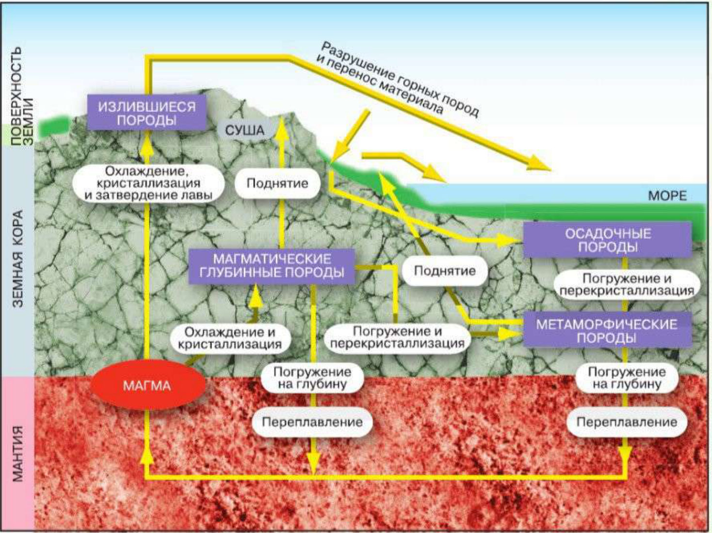

География, 7 класс, параграфы 10 и 11. Здесь весь текст учебника, только разложенный по полочкам. Синие рамки — определения, тёмные — главные выводы, зелёные — пояснения простыми словами. Картинки можно нажать, чтобы рассмотреть крупно.
§ 10
Земная кора на карте
Учебник, с. 36–39
В этом параграфе
Как развивались платформы и складчатые области.
Что показывает карта строения земной коры.
Как размещаются на Земле горы и равнины.
1Как развивались платформы и складчатые области?
Вспомни: земная кора под материками и под океанами устроена по-разному. У океанической коры нет гранитного слоя, она моложе и тоньше материковой.
Учёные предполагают, что сначала на Земле образовалась кора океанического типа. В ней появились первые устойчивые участки, и их площадь понемногу росла за счёт окраин. Окраинные области постепенно теряли подвижность и «прирастали» к более древним устойчивым участкам — платформам.
В эпохи, когда процессы внутри Земли усиливались, возникали крупные разломы. Материки раскалывались и расходились друг от друга, а там, где литосфера растягивалась, образовывалась новая тонкая океаническая кора. Так сложились самые крупные части строения земной коры — выступы материков и впадины океанов.
Платформы — крупные устойчивые участки земной коры с кристаллическим фундаментом в основании, на обширных площадях — с осадочным чехлом поверх него.
Складчатые области — участки земной коры, в пределах которых слои горных пород смяты в складки.
Обычно у платформы два этажа (рис. 23):
Кристаллический фундамент — нижний этаж. Он сложен очень древними метаморфизованными породами, смятыми в складки. «Метаморфизованные» значит, что с породами произошло множество превращений.
Осадочный чехол — верхний этаж, лежит поверх фундамента. Горные породы в нём залегают в основном горизонтально, ровными слоями.

Рис. 23. Строение платформы. Нажми, чтобы увеличить.
1фундамент — смятые в складки древние породы2осадочный чехол — горизонтальные слои3щит — фундамент выходит на поверхность
Места, где кристаллический фундамент выходит на поверхность, называют щитами.
Участки, где фундамент погружён вниз и покрыт осадочным слоем, называют плитами.
Платформа похожа на старый каменный пол, засыпанный слоями песка и глины. Где пол виден прямо на поверхности — это щит. Где он спрятан под слоями — это плита.
В разные геологические эры подвижные участки, где шли складчатость и горообразование, находились в разных местах. Поэтому все они оставили след в строении земной коры, но возраст у них разный.
Постепенно к ядрам древних платформ присоединялись всё новые участки. В местах растяжения и сжатия литосферы развивались новые процессы горообразования и складчатости.
2Что показывает карта строения земной коры?
Рубрика «Читаем карту»
Рассмотри карту на рисунке 24. Разными цветами на ней выделены крупные участки: каждый цвет означает определённую часть строения земной коры.

Рис. 24. Карта строения земной коры. Нажми, чтобы рассмотреть крупно.
Как читать карту:
Цвет на карте
Что это
Возраст
розовато-красноватый (занимает больше всего места)
древние платформы — участки коры, которые сформировались раньше других
более 540 млн лет
яркий розовый внутри древних платформ
щиты — на поверхность выходит фундамент
—
бледный сине-зелёный рядом с древними платформами
молодые платформы (плиты). Их рельеф сгладился в палеозойскую или мезозойскую эру, они покрылись осадочными отложениями и присоединились к древним платформам
менее 500 млн лет
сине-фиолетовый и коричневый
складчатые области, самые древние: были подвижны в палеозойскую эру
более 200 млн лет назад
зелёный
складчатые области, где горообразование шло в мезозойскую эру
—
оранжевый
складчатые области кайнозойской эры, горообразование идёт и до сих пор
самые молодые
красные длинные штрихи
разломы земной коры
—
Вокруг платформ в пределах материков расположились складчатые области разного возраста. Это участки, на которых в разное время шло активное горообразование.
В строении океанического дна тоже есть устойчивые и подвижные участки.
По карте строения земной коры определяют возраст её различных участков и этапы развития. На ней показаны платформы (плиты и щиты), складчатые области, разломы и др.
3Как размещаются на Земле горы и равнины?
Ты уже знаешь из курса 5 класса: подвижным участкам земной коры в основном соответствуют горы, а устойчивым — равнины. Убедиться в этом можно, если сравнить карту строения земной коры с физической картой мира (Приложение учебника, с. 244–245).
Равнины приурочены к древним и молодым платформам.
Примеры:
Крупные низменные равнины Южной Америки — Амазонская и Лаплатская — лежат на древней Южно-Американской платформе. На щитах той же платформы находятся плоскогорья — Бразильское и Гвианское.
Наша Восточно-Европейская (Русская) равнина, а также Великие и Центральные равнины Северной Америки соответствуют древним платформам — Восточно-Европейской и Северо-Американской.
В основании Западно-Сибирской равнины лежит молодая платформа.
Африка почти целиком — это древняя Африкано-Аравийская платформа с многочисленными выступами фундамента. Поэтому в рельефе Африки больше всего высоких равнин — возвышенностей и плоскогорий.
Горы приурочены к складчатым областям разного возраста.
Современные складчатые горы располагаются в областях кайнозойского возраста.
Области складчатости выражены в рельефе горами. Но горы Земли могут сильно различаться по высоте, по очертаниям и по тому, как в них залегают горные породы. Это зависит от возраста и особенно от того, насколько активны были движения земной коры в последние 25 млн лет (их называют новейшими тектоническими движениями).
Молодые складчатые горы. В областях кайнозойской складчатости горообразование продолжается до сих пор, оно сопровождается землетрясениями и вулканизмом. Здесь поднимаются самые высокие горы мира — Гималаи, Кавказ, Анды, Альпы. Слои пород в них изогнуты в складки разной величины, то есть имеют складчатое строение. Выпуклым частям складок часто соответствуют горные хребты, вогнутым — межгорные впадины.
Возрождённые горы. Горы, возникшие в палеозое, к началу кайнозойской эры были почти полностью разрушены внешними силами Земли. В кайнозое внутренние силы Земли снова стали активнее, и складчатое основание этих гор раскололось. По разломам одни глыбы (блоки) поднимались, образуя горсты, а другие опускались, образуя грабены. Такие горы называют возрождёнными. Среди них есть и высокие, и средневысотные горы. Когда глыбы смещались, складки оказались разорванными. Поэтому строение таких гор — складчато-глыбовое.
Старые горы сначала почти «стёрлись» до равнины. Потом их основание треснуло на куски: одни куски поднялись (горсты), другие опустились (грабены). Горы «возродились», но уже из глыб.
Теперь ты легко найдёшь на физической карте, например, горы Куньлунь и Тянь-Шань в Центральной Азии, Уральские и Алтай в России, Аппалачи в Северной Америке, Большой Водораздельный хребет в Австралии, а по карте строения земной коры определишь их возраст.
На дне океанов на подвижных участках находятся срединно-океанические хребты и глубоководные желоба.
Размещение гор и равнин на Земле подтверждает связь между рельефом территории и строением земной коры.
Запомните
ПлатформыЩиты и плитыСкладчатые области
§ 11
Природные ресурсы земной коры
Учебник, с. 40–43
В этом параграфе
Какие природные ресурсы земной коры использует человек.
Что происходит с горными породами в природе.
Где искать полезные ископаемые.
1Какие природные ресурсы земной коры использует человек?
Самый первый ресурс земной коры, который понадобился человеку, — это территория, на которой он поселился. Человек начал её обживать: строил жилища, возделывал землю и постепенно осваивал всё новые виды хозяйственной деятельности.
В древности свободной земли было много, и освоение новых участков зависело в основном от желания и технических возможностей людей. Сначала осваивали самые удобные территории — равнины, по которым текли полноводные реки, и плодородные межгорные долины. Потом наступала очередь менее удобных участков, и на их освоение требовалось всё больше сил и средств. Когда неосвоенных уголков планеты осталось немного, земельные ресурсы превратились в самый ценный вид природных ресурсов.
Земельные ресурсы — территория, пригодная для расселения людей и размещения объектов их хозяйственной деятельности.
Минеральные ресурсы — природные вещества земной коры, пригодные для получения энергии, сырья и материалов.
Почти сразу же, вместе с освоением территории «вширь», люди стали проникать и «вглубь», чтобы использовать богатства недр Земли — минеральные ресурсы. Минералы и горные породы человек использует уже многие тысячи лет:
🪨
Сначалаиз самых доступных камней делали орудия труда и простые украшения;
⚒️
потомиз железной руды научились выплавлять металл, а каменный уголь стали использовать как топливо;
⛽
сегоднячеловек добывает самые разные полезные ископаемые и превращает их в огромное количество продуктов — от топлива для автомобилей и ракет до простой соли на нашем столе.
Из всех видов природных ресурсов с земной корой более всего связаны земельные и минеральные ресурсы.
2Что происходит с горными породами в природе?
Ты знаешь, что земная кора сложена горными породами, а они состоят из минералов. И горные породы, и минералы различаются по происхождению.
Большая часть толщи горных пород — это магматические и метаморфические породы. В основном они скрыты от глаз под осадочным чехлом, слоем почвы и растительностью. Но иногда их можно увидеть и на поверхности, например в гранитных массивах щитов платформ и на склонах вулканов.
Большая часть поверхности сложена осадочными породами.
Горные породы участвуют в круговороте веществ на Земле и испытывают множество превращений. Рассмотри рисунок 25 и проследи по жёлтым стрелкам.

Рис. 25. Образование горных пород. Нажми, чтобы увеличить.
Магматическиеиз застывшей магмы. Глубинные (гранит) и излившиеся (из лавы).
Осадочныеиз обломков разрушенных пород, которые накопились слой за слоем (песчаник).
Метаморфическиеиз любых пород, попавших на большую глубину, где жарко и высокое давление.
Как образуются магматические породы. Расплавленная магма прорывается в толщу земной коры, начинает остывать и кристаллизоваться. Так формируются магматические породы. Они бывают двух видов:
Глубинные. Если магме не удаётся сразу выйти на поверхность, она медленно остывает: сначала образуются крупные, потом мелкие кристаллы. Получается глубинная горная порода, например гранит. В куске гранита даже без лупы видны кристаллы кварца, полевого шпата и слюды.
Излившиеся. Если магма изливается на поверхность лавой (при извержении вулкана), образуется излившаяся порода. Лава остывает быстро, и кристаллы часто не успевают образоваться. Тогда получается корка, похожая на стекло (например, на вулканах Гавайских островов).
Как образуются осадочные породы. При движениях земной коры глубинные породы могут подняться на поверхность. Тогда они, как и излившиеся, начинают разрушаться. Обломки сносятся водой, ветром, сползают по склонам в понижения рельефа и на дно океанов и морей (см. рис. 25). Слой за слоем рыхлые отложения накапливаются, уплотняются и превращаются в осадочные породы. Так, например, образуются песчаники со слоистой структурой.
Как образуются метаморфические породы. И осадочные, и магматические породы при движениях земной коры могут оказаться на большой глубине. Там под действием высоких температур и давления они превращаются в метаморфические породы. А если погрузиться ещё глубже, они переплавятся и снова станут магмой — круг замкнулся.
Горные породы и минералы испытывают множество превращений, участвуя в круговороте веществ в природе.
3Где искать полезные ископаемые?
Полезные ископаемые — это та часть минеральных ресурсов, которую можно выгодно использовать в хозяйстве.
Важно слово «выгодно». Месторождение железной руды выгоднее всего разрабатывать, если железа в руде больше 50 %. А платину или золото добывают, даже если их в породе совсем мало: они очень ценные.
За свою историю люди нашли очень много месторождений полезных ископаемых и очень многие уже выработали, нередко нанося вред окружающей среде. Но производству нужно всё больше сырья и энергии, поэтому работа геологов не прекращается. Специалисты разных отраслей ищут новые технологии добычи и переработки полезных ископаемых — тех, что лежат в труднодоступных местах или содержат не слишком много полезного минерала.
Рудные полезные ископаемые чаще всего приурочены к щитам древних платформ и древним складчатым областям.
Месторождения нефти и природного газа связаны с плитами древних и молодых платформ, шельфами морей, предгорными или межгорными впадинами.
Рассмотри на карте (рис. 24) самые крупные месторождения мира и сравни их размещение со строением земной коры. Можно заметить две вещи:
полезные ископаемые найдены на всех материках, а также на дне морей рядом с берегами;
размещены они неравномерно, и набор полезных ископаемых на разных территориях разный.
Рудные полезные ископаемые. Африка, как ты уже знаешь, — это древняя платформа с многочисленными выходами фундамента. В ней огромное количество полезных ископаемых. К щитам платформы приурочены месторождения руд чёрных, цветных и редких металлов (каких именно — посмотри по легенде карты), а также золота и алмазов.
Если сравнить расположение щитов древних платформ и рудных ископаемых на других материках, получится примерно та же картина. Кроме того, рудные ископаемые есть и в горах: там тоже залегают магматические и метаморфические породы. Добывают их в основном в более древних, разрушенных горах: в них ближе к поверхности оказываются магматические и метаморфические породы, в которых содержатся руды. Однако и в Андах разрабатывают богатейшие месторождения цветных металлов, прежде всего меди и олова.
Топливные полезные ископаемые — газ, нефть, уголь — в современном мире имеют огромное значение. Их месторождения приурочены к осадочному чехлу древних и молодых платформ, а также к предгорным и межгорным впадинам (см. карту).
Полезные ископаемые
Где их искать
Рудные: руды металлов, золото, алмазы
щиты древних платформ, древние (разрушенные) складчатые области, горы
Топливные: нефть, газ, уголь
осадочный чехол (плиты) древних и молодых платформ, шельфы морей, предгорные и межгорные впадины
Размещение полезных ископаемых связано со строением земной коры и историей её развития.